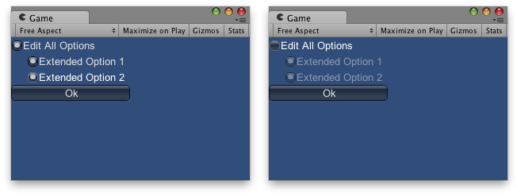

GUI.enabled
public static bool enabled;
Description 描述
Is the GUI enabled?
Set this value to false to disable all GUI interaction. All controls will be draw semi-transparently, and will not respond to user input.

Enabled / Disabled GUI controls.
using UnityEngine; using System.Collections;
public class ExampleClass : MonoBehaviour { // The value tracking whether or not the extended options can be toggled. public bool allOptions = true;
// The 2 extended options. public bool extended1 = true; public bool extended2 = true;
void OnGUI() { // Make a toggle control that allows the user to edit some extended options. allOptions = GUI.Toggle(new Rect(0, 0, 150, 20), allOptions, "Edit All Options");
// Assign the value of it to the GUI.enabled - if the checkbox above // is disabled, so will these GUI elements be GUI.enabled = allOptions;
// These two controls will only be enabled if the button above is on. extended1 = GUI.Toggle(new Rect(20, 20, 130, 20), extended1, "Extended Option 1"); extended2 = GUI.Toggle(new Rect(20, 40, 130, 20), extended2, "Extended Option 2");
// We're done with the conditional block, so make GUI code be enabled again. GUI.enabled = true;
// Make an Ok button if (GUI.Button(new Rect(0, 60, 150, 20), "Ok")) { print("user clicked ok"); } } }